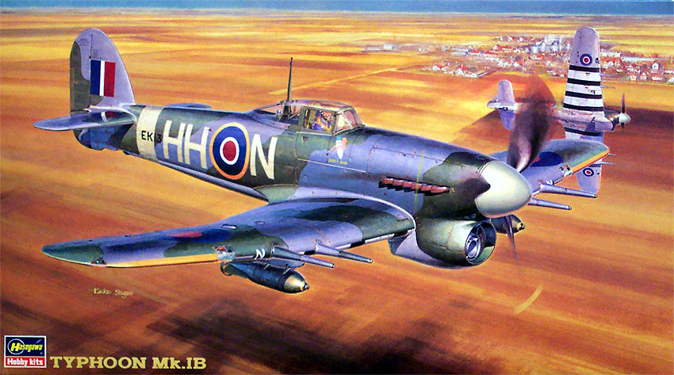
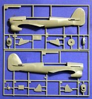
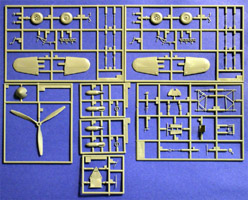
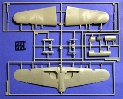
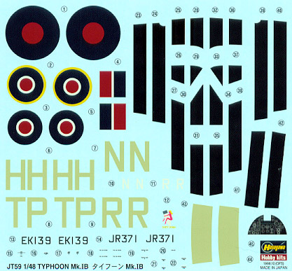
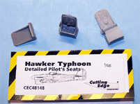
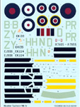
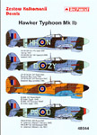

{kind=link}
{kind=link}
{kind=link}
{kind=link}
{kind=link}
{kind=link}
{kind=link}


Hasegawa 1/48 Typhoon Mk. 1B

Kit #9059
MSRP $26.95
Images and text Copyright � 2005 by Matt Swan
Developmental Background
The Hawker Typhoon was simply put the most effective ground attack aircraft used by the Western Allies in WW2. Perhaps the Soviet Sturmovik or later versions of the JU 87 hold the records for numbers built and targets destroyed, but for the Allies �Typhoon� was synonymous with ground attack. Designed by Hawker�s Sir Sidney Camm as a Hurricane/Spitfire replacement just before WW2 the Typhoon was a large single seat fighter meant to be faster and more heavily armed than anything that was in service with the RAF or any competing power.
Envisioned as a bomber destroyer with a speed of over 400 MPH and a heavy armament of at least 12 .303 machine guns carried in a tough modern airframe with a robust undercarriage capable of using rough grass strips it was proposed in two designs. The Napier Sabre engine (twice the size of the Merlin and twice the power) powered the N-type and the Rolls Royce Vulture powered the R-type. The R-type was dubbed the Tornado and made its maiden flight in October 1939. The Sabre powered design designated Typhoon suffered developmental problems with the engine and did not fly until February 1940.
Designed to be an air superiority fighter, and in pure speed it was, the aircraft had some faults that delayed its entry in to service and almost caused it to be cancelled. The Napier Sabre inline engine was initially very unreliable and prone to catching fire, even in 1945 you never started one up without a junior ground crewman with a fire extinguisher near by! This engine often failed pitching its pilot into a hurried exit or a very dangerous crash landing. Eventually these problems were overcome. By the time it first flew the war had started and Britain had its back to the wall as the Germans swept over Europe.
The Typhoon was lacking at heights over 15,000 feet, where most combat was fought and the Spitfire and BF 109 reigned supreme until as late as 1941/2 with the introduction of the deadly FW 190A by the Luftwaffe. Regrettably Allied fighters shot down some Typhoons as it could be mistaken for the FW 190. Typhoons became the first British plane to wear black and white stripes as identity markings, later adopted for all day flying aircraft for D Day. Two versions were built all called Typhoon 1. The "A" had 12 machine guns and the "B" 4 20mm cannon. Within the �B� series the first ones had a fixed canopy with "car door" type entry in the fuselage side, with later examples having a teardrop shaped bubble canopy for greater visibility and ease of exit in an emergency.
On entering service in late 1941 Typhoon found its niche combating vicious German terror raids by fighter-bombers sneaking in under the radar to attack civilian and military targets on the south coast. Typhoon pilots in these short deadly combats could soundly beat the FW 190 that reigned supreme at higher altitudes until the Spitfire lX came along in 1942. Typhoons also started to fly hit and run raids and general sorties over Europe armed with bombs and its awesome cannon. Trains, barges, E Boats, flak sites and airfields became favorite targets. From these raids in 1943 the Typhoon developed into its most famous roll as tank buster and ground attack plane supreme. One key role was against German radar sites in the run up to D Day, where low level attack with rockets was more effective than level bombing. The Typhoon�s supreme moment came in Normandy at Falaise, when retreating German forces were surrounded by American and Commonwealth troops and to be blunt slaughtered by Allied air power. Most notably Typhoons firing rocket and cannon shells at men, machines, horses and anything else that got in the way including some unfortunate live stock.
With the war over Typhoon disappeared from service by September 1945 as its faster descendant the Tempest took over.
The Kit


Released in 1998 this is another wonderful model kit from Hasegawa. The box is chock full of trees of parts all molded in light gray high-pressure injected polystyrene. The primary exterior kit parts all display fine, crisp engraved panel lines and rivet detail. The fuselage features raised tail structure reinforcing plates placed there to combat what was erroneously thought of as a weak fuselage (later found to be a result of buffeting).
The interior features some nice detail also with tubular structure around the pilot�s compartment, an open floor pan, detailed rudder pedals, three piece dashboard and a cute little throttle quadrant. The seat leaves something to be desired but we will talk more about that later on. I want to take a moment here to mention that all the small images of the parts trees are linked to larger images so you can click on them to view enlarged pictures, of course you already knew that, didn�t you?

All right, back to the kit. The landing gear are very well detailed and the kit does a great job of representing the complex retraction struts. Also included are two options for exhaust shrouds. Tires are bulged and flattened and there is one set of bombs included. Something lacking that the Typhoon was famous for was air to ground rockets. None of the parts show any evidence of neither flash nor heavy injector port markings or sink holes. I don�t even see much of anything in mold separation lines. Over seven trees we have 83 parts to work with. In addition, we have a single tree of clear parts that include a closed canopy, an open canopy with door and hatch, wingtip marker lights, landing light lenses, reflective gunsight and a few other little odd pieces. We have twelve pieces on the clear tree. Frame lines on the canopy are clearly visible but are so finely raised that I can barely feel them. This could make masking slightly difficult. Lastly there is a little tree of 4 poly caps for use on the propeller. Total count gives us 99 pieces in the box.
Decals and Instructions

Almost all Typhoon Mk. 1s carried the exact same paint scheme � so exact that there are camouflage masks available to help the modeler recreate this pattern. Markings are very similar also and this kit includes markings for two different aircraft. We have Number 175 Squadron of the Royal Air Force and Number 198 Squadron of the Royal Air Force. Decals include the sky tail band and sky code letters, national markings and black identification strips to be overlaid on a white surface. The dash instruments are offered as a decal if you do not care to paint the raised detail on the part. The decal sheet also includes several service stencils. All the decals are sharp and have good print registry as well as color density. They do appear to be slightly thick as with most Hasegawa decals so have your stronger setting solutions ready.
The kit instructions are typical Hasegawa; we get an eight panel fold out that begins with a good historical background of the aircraft in Japanese and English. Following this three panels comprising eleven exploded views taking us all the way through the construction process. There are plenty of color call-outs here and a couple of construction options are offered. The next panel is a complete parts map followed by two panels of decal placement instructions and exterior painting guides. The last panel is the standard basic building tips and warnings.
Conclusions and Accessories
All in all not a bad kit but there are a few things left wanting. For one the pilot�s seat is basically crappy. I elected to replace mine with the excellent Cutting Edge resin seat with seatbelts formed in place. Below left we have a picture of the Cutting Edge seats with the original kit seat. As you can see (that�s a clickable picture) the CE seats are vastly superior plus the package includes TWO seats so there is a spare for the parts box, always something nice to have. As I mentioned in the decal review, most Typhoons carried the same paint scheme. I like to do things a little different and found a set of Techmod decals featuring a single aircraft with desert markings for operations in Egypt.



These are vastly superior to the kit decals offering four different aircraft, more service stencils, and Yellow leading edge wing decals if you don�t like to paint that stuff and material to work with that is nowhere near as thick as the kit decals. On the right are images of the cover art and the decals for your consideration. I also decided to try the Cutting Edge Black Magic masks with this kit because I had just finished masking the nose glazing on my Do-217 M-11 when I ordered this and really did not want to cut any more masking tape at the time.
There are plenty of other aftermarket items out there if you want to get even crazier on this kit. As I mentioned before there are precut camouflage painting masks, many other decal options, PE detail packages, replacement cockpits, replacement vac canopies and resin wheels and even engine kits if you want to open the hood.
The basic kit is very nice, parts fit together very well and little if any filler will be needed. Overall detail is more than adequate and the cockpit is fairly nice (other than the seat) but it does lack the air-to-ground rockets. Directions are clear and right to the point. Decals look good on paper but if you are serious about your models I would suggest looking for some replacements. This was an important aircraft for the Allies and you would be remiss if there were not at least one represented in your collection.